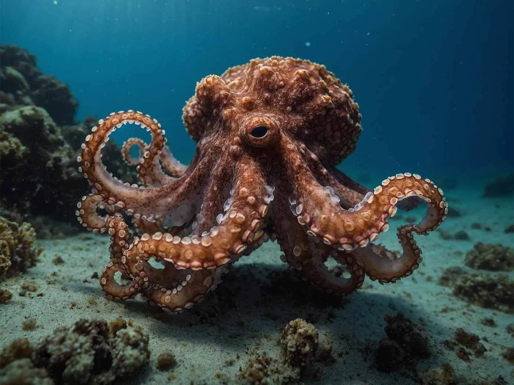
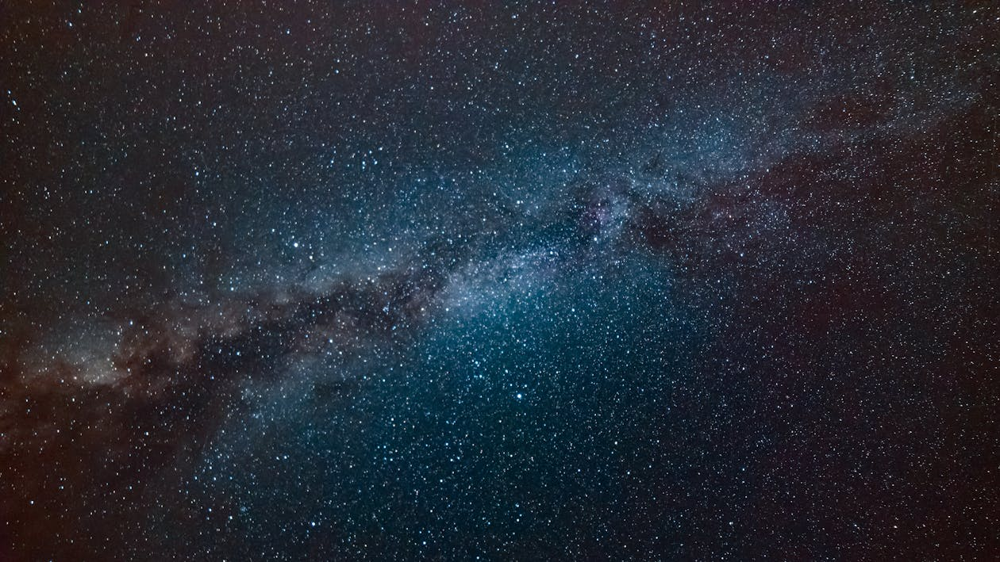
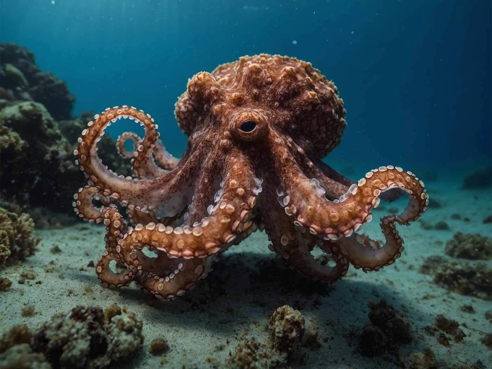
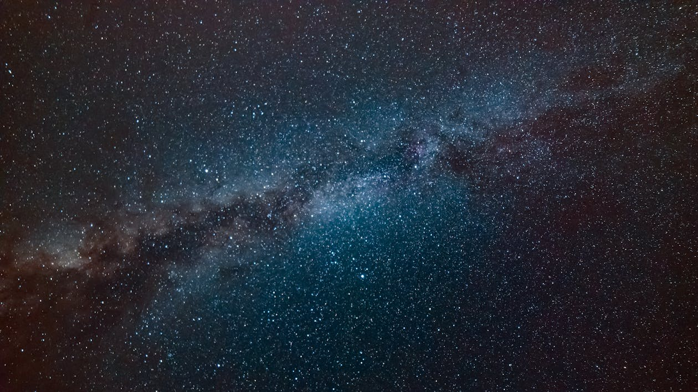

Descubra curiosidades fascinantes sobre o mundo ao nosso redor!
Você sabia?
O polvo tem três corações e o sangue azul!
Fato curioso
A Lua se afasta da terra cerca de 3,8 cm por ano.
Inacreditádital!
Se somarmos toda a areia das praias, dos desertos e do fundo dos oceanos, o total de grãos deve ser muito maior que o de estrelas no Universo observável
Veja também:
Assista a um vídeo cheio de curiosidades interessantes!
 


